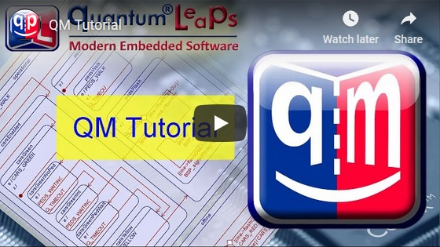
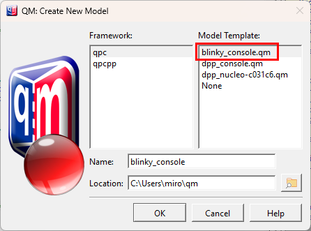
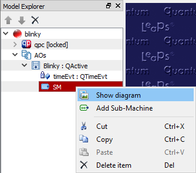
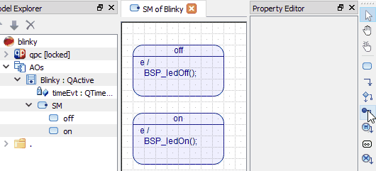
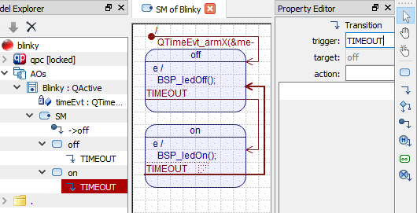
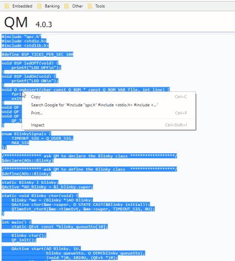
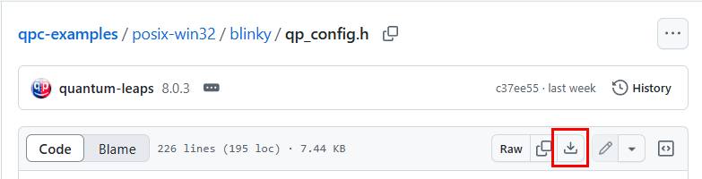
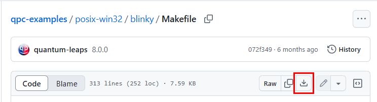
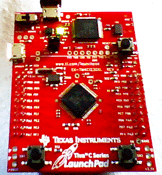

Launching QMQM Examples
This tutorial describes how to use QM to model and implement a simple "Blinky" application, which can blink an LED on an embedded board or just print the state changes of the LED to the screen when executed on the desktop.
- Note
- This tutorial assumes QP/C↑ (version 6 or higher). To work with other QP Framework types (e.g., QP/C++↑) it is recommended to create your Blinky model from a model template for the specific framework type, as described below.
QM Tutorial Video
If you prefer to watch the video version of this tutorial, it is available on the Quantum Leaps YouTube Channel:

Watch QM Tutorial video
Creating A New Model from Scratch
To create a new model, go to menu or press the New Model button in the Edit Toolbar. This will open the following New Model Dialog Box :
- Select the QP framework type you want to base the new model on (the "Framework" panel). The choices are:
qpc for QP/C and qpcpp for QP/C++. For this tutorial, leave the default qpc framework type.
- Choose the model template for your model ("the Model Template" panel). , select the template and leave it at "None", your model will be empty, except the selected framework. For this tutorial, leave the default template None, so that you can start building your model from scratch.
- Name your model (the "Name" field). NOTE: the
.qm extension will be added automatically. For this tutorial, rename the model to blinky.
- Choose the directory for your model file (the "Location" field). You can either type in the path manually, or you can press the button to open the directory-search dialog box. For this tutorial, choose the model location to
<your-directory>\blinky, where <your-directory> is a directory of your choice. NOTE: the model directory also provides the reference point for code generation. All generated directories and files are relative to the model file directory.
- Press the OK button.
- If you wish to build the model from scratch, skip the next section and proceed to Adding Model Items.
Creating Blinky Model from Template
Alternatively, you can create the Blinky model from the provided Template. As shown in the screen shot below, you select the blinky.qm Template in the New Model dialog:

The Blinky template in New Model dialog
When you close the dialog with the OK button in this case, the blinky model will be copied from the provided template and will be ready. You can inspect the model, show the Blinky state diagram, generate code from it, build the application and run it on your desktop PC.
- Attention
- The blinky model templates are available for all QP Framework types (QP/C and QP/C++), not just for QP/C. These model templates are a bit more advanced than the model you will create from scratch in the rest of this Tutorial. The models created from these templates are annotated with comments and documentation and it is highly recommended that you get familiar with the structure of these models.
Adding Model Items
Now you can start adding items to the new model.
Add a Package
The first item you add is a Package. A package in UML is a grouping construct that allows you to combine other model items into a higher-level unit—the package. The most common use of a package is to group together classes, but a package can hold also free attributes, free operations, and even other packages.
- In the Model Explorer view right-click on the blinky model item to get a popup-menu specific to that item. Once the popup menu opens, select .
- In the Property Editor change the package name to
AOs (Active Objects) and the stereotype to components.
Add a Class
Next you need to add a class to the new package, because only classes can have behavior (i.e., State Machines).
- In the Model Explorer view right-click on the AOs package and select from the popup menu.

Add Class
- In the Property Editor change the class name to
Blinky and the superclass to qpc::QActive.
- Note
- In QM a State Machine can only be associated with a class that inherits one of the QP state machine classes. The choice of the state machine superclass determines the state machine implementation strategy.
Add a Time Event
Next, you need to add a Time Event attribute that will deliver the periodic stimulus to trigger blinking in your Blinky state machine.
- In the Model Explorer right-click on the Blinky class and select from the popup menu.
- In the Property Editor change the attribute name to
timeEvt, the type to qpc::QTimeEvt, and visibility to private.

Attribute Properties
Add State Machine
- In the Model Explorer right-click on the Blinky class and select from the popup menu.
Drawing State Machine Diagram
- In the Model Explorer right-click on the SM (State Machine) item and select from the popup menu. Alternatively you can just double-click on the SM item to execute its default action, which is to show the diagram.

Show State Machine Diagram
Add States
- In the Diagram Toolbox click on the state tool. Move your mouse (all mouse buttons released) to the diagram window where you want to position the upper-left corner of the state shape. Notice the new shape of the mouse cursor (shown on the right). Click the mouse and drag it (with mouse button depressed) to the location of the lower-right corner of the state shape. Release the mouse.
- In the Property Editor change the state name to
off and add the entry action to this state BSP_ledOff();.
- In a similar way as before add a second state. In the Property Editor change the state name to
on and add the entry action to this state BSP_ledOn();.
Add Initial Transition
- In the Diagram Toolbox click on the initial transition tool. Move your mouse (all mouse buttons released) to the diagram window where you want to position the beginning of the initial transition shape. Notice the new shape of the mouse cursor (shown on the right). Click the mouse and drag it (with mouse button depressed) to the edge of the state. Notice the cursor change when you reach the edge. Release the mouse.

Adding the Initial Transition
- In the Property Editor add action code to this initial transition
QTimeEvt_armX(&me->timeEvt, BSP_TICKS_PER_SEC/2, BSP_TICKS_PER_SEC/2);
- Note
- The action code of the initial transition arms the time event to expire in
BSP_TICKS_PER_SEC/2 number of clock ticks (i.e., in 1/2 of a second) and also every BSP_TICKS_PER_SEC/2 number of clock ticks (i.e., every 1/2 of a second).
Add Transitions
- In the Diagram Toolbox click on the transition tool. Move your mouse (all mouse buttons released) to the state edge where you want to position the beginning of the transition connector. Notice the new shape of the mouse cursor (). Click the mouse and drag it (with mouse button depressed) to the edge of the state. Notice the cursor change when you reach the edge. Release the mouse.
- In the Property Editor change the trigger of this transition to
TIMEOUT.
- In a similar way as before add a second transition and change its trigger also to
TIMEOUT.

Complete State Machine
Engineering the Code
Compared to most other graphical tools based on state machines, QM turns the code generation "upside down". QM lets you determine the generated code structure, directory names, file names, and elements that go into every file (see Physical Design). You can mix your own code with the generated code and use QM to generate as much or as little of the overall code as you see fit .
Add Directory
First, you need to create a directory, which will determine the location of the files generated on disk relative to the QM Model File.
- In the Model Explorer right-click on the blinky model item and select in the popup menu. This will be the directory where your code will be generated. The path of the directory relative to the QM Model File can be edited in the Property Editor. Type
. (dot) for the name of the directory. The dot means the same directory as the QM Model File, meaning that your code will be generated in the same directory as your model.
Add File
Once you have a directory, you can add Files to it. In a real-life project you would typically split the code into header (.h) files, place each active object in its own source (.c) file, and use separate .c files for the Board Support Package (BSP) and main(). But for the sake of simplicity, this tutorial will put the whole implementation in just one file: blinky.c, which you create as follows:

Adding a File
- In the Model Explorer view right-click on the . directory item and select in the popup menu. After the file is created, you can edit its name in the Property Editor. Type
blinky.c in the name box and press Enter. Note that the file icon changes to .
Edit File
In QM you provide the body of every file-template, in which you can type your own code as well as Code Generation.
- In the Model Explorer double-click on the blinky.c file to open the file in a window. Next copy the following code to the Clipboard and paste it into the file window.
file blinky.c #include "qpc.h"
#include <stdio.h>
#include <stdlib.h>
enum BlinkySignals {
TIMEOUT_SIG = Q_USER_SIG,
MAX_SIG
};
enum { BSP_TICKS_PER_SEC = 100 };
void BSP_ledOff(void) {
printf("LED OFF\n");
}
void BSP_ledOn(void) {
printf("LED ON\n");
}
void Q_onError(char const * const module, int loc) {
fprintf(stderr, "Assertion failed in %s:%d", module, loc);
exit(-1);
}
void QF_onStartup(void) {}
void QF_onCleanup(void) {}
void QF_onClockTick(void) {
QTIMEEVT_TICK_X(0U, (void *)0);
}
extern QActive * const AO_Blinky;
void Blinky_ctor(void);
int main() {
QF_init();
Blinky_ctor();
static QEvtPtr blinky_queueSto[10];
QActive_start(AO_Blinky,
1U,
blinky_queueSto,
Q_DIM(blinky_queueSto),
(void *)0, 0U,
(QEvt *)0);
return QF_run();
}
$declare${AOs::Blinky}
static Blinky l_blinky;
QActive * const AO_Blinky = &l_blinky.super;
void Blinky_ctor(void) {
Blinky *me = (Blinky *)AO_Blinky;
QActive_ctor(&me->super, Q_STATE_CAST(&Blinky_initial));
QTimeEvt_ctorX(&me->timeEvt, &me->super, TIMEOUT_SIG, 0U);
}
$define${AOs::Blinky}
- Attention
- The listing above shows the two most important code generation directives: $declare${AOs::Blinky} for generating the Declaration of the
Blinky class, and $define${AOs::Blinky} for generating the Definition of the of the Blinky class.

Opening blinky.c File and Pasting the Code
Generate Code
- Generate code by pressing the Generate Code button in the Tools toolbar.
At this point QM has generated the blinky.c file in the same directory as the blinky.qm QM Model File. You can inspect the generated blinky.c file on the disk with your favorite code editor.
Building the Project
To build the example, you need to combine the generated blinky.c source file with other files, not generated by QM, most notably the qp_config.h header file and QP/C framework source code. The following annotated directory listing explains the files needed to build the Blinky application:
<blinky>
blinky.c
qp_config.h
Makefile
...
<qp>
+---qpc
+---include
+---src
+---ports
Downloading Additional Files
Here are the additional files you need to download (from GitHub) and put in the Blinky project directory, as shown in the directory listing above:


Building from the Terminal
After downloading qp_config.h and Makefile, you invoke the make utility to build your Blinky executable, whereas you set the QPC variable to point to the location of the QP/C framework:
Windows:
make QPC=c:\qp\qpc
Linux, macOS:
make QPC=~/qp/qpc
- Note
- On Windows, the free
make utility and the gcc compiler aren't typically installed, so you need to download and install them. The QTools collection for Windows↑ contains the MinGW gcc compiler and other Unix-style utilities.
Running Blinky in the Console
Finally, you can run the produced Blinky executable, which starts printing to your screen. You exit the application by pressing Ctrl+C.
build\blinky
On Linux, you run the produced blinky file as follows. Again, you exit the application by pressing Ctrl+C.
build/blinky

Blinky on Linux
You exit the application by pressing Ctrl+C.
Building Blinky for an Embedded Board
To build the Blinky project for an embedded board, you need to modify the BSP (Board Support Package) to turn the LED on and off. You also need to use the specific cross-compiler. Please refer to the "Getting Started" video↑ for more information about getting started with the QP Frameworks. Also, you might read "Getting Started" Application Notes: QP/C↑ and QP/C++↑.

Blinky on TivaC LaunchPad
Launching QMQM Examples